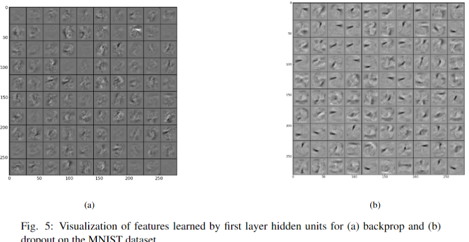
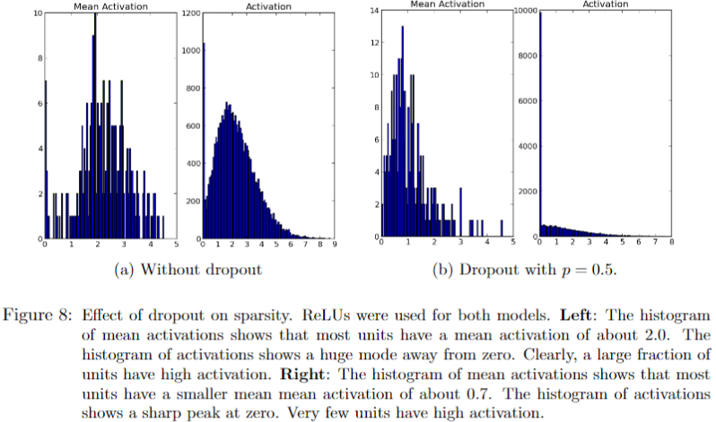

提出的问题
在小数据集上使用非常大的神经网络模型训练，往往会出现过拟合的情况。
解决思想
随机忽视掉一半的特征检测器，即drop rate为0.5的Dropout，作者解释这样做的原因是减少特征之间的相互依赖性，并展示了在CNN中使用和不使用Dropout两种情况所提取到的特征图，如下所示，作者解释说:“ The features that dropout learns are simpler and looklike strokes, whereas the ones learned by standard backpropagation are difficult to interpret”。 
我觉得这个解释很勉强，关于Dropout的有效性，另外一篇论文《Dropout: a simple way to prevent neural networks from overfitting》有更多的描述，其中提到了Dropout可以让feature激活值变得更加稀疏,如下所示,我认为这是Dropout抑制过拟合的一个原因 
实现细节
- MNIST:使用全连接神经网络,在输入层使用drop rate为0.2的Dropout，在隐藏层使用drop rate为0.5的Dropout,学习速率指数衰减，初始学习率为10，不使用权重衰减，但是使用权重裁剪策略，将权重的“squared length”限制在15以内。
- CIFAR-10:使用CNN模型，在最后的卷积层之后加入一个局部全连接层，作为一个不共享权重的卷积层，并在这个层上使用Dropout。
- CIFAR-10:使用CNN模型，在最后的两个全连接层上进行Dropout。